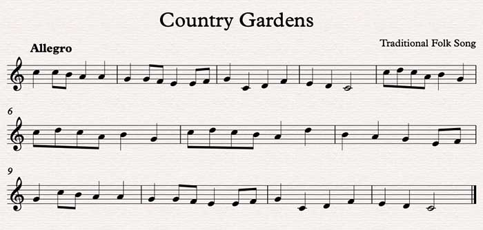

✍Analyzing and Understanding Music🤔
Lastly, to have a more holistic understanding and appreciation for music, it is paramount to learn some basic music theory. It may not be as exciting as playing the piano, but it is still an essential part of it! Below are some basics we ought to know!
Arguably the most practtical need to learn theory is the ability to read scores. This helps you in picking up different pieces and understanding their nuances.
Referring to the diagram on the right, what pattern do you observe?
The keys repeat themselves! The distance from one note, say C, to the next C is called an octave.
There are some acronyms to also help you in reading a score. In the picture on the left, the symbol on the top row is called a treble cleff whereas the symbol to the bottom row is called the bass cleff.
On the top left bar, the notes are written in the "spaces" of the score. The first "space" corresponds to the key F on the piano (you can refer to the right diagram if you need). Moving to the next space, it would be the key A followed by C and E. You can therefore remember it as FACE for the "spaces" of the treble cleff.Now, on the top right bar, you can see that the notes are written on the lines of the treble cleff. The notes from one line to another is EGBDF. This is an acronym for "Every Good Boy Does Fine". Also, you may have realized that the first note,E is written below the first "space" noteF. Therefore, the lower the notes are written on the score, the more to the left it would be on the piano. In other words, the progression up the piano alternates between lines and "spaces".
Likewise, for the "spaces" on the bass clef, the notes are ACEG, which is an acronym for "All Cow Eats Grass". And for the lines of the bass clef, the keys are GBDFA which is an arconym for "Good Boy Does Fine Always". It might take awhile until you fully remember the corresponding note to the corresponding key on the piano, but with enough practice, you will be able to do it!
A video would be a better step-by-step guide to learning piano. Watch the video below if you are interested!
The theoretical definition of scales is any set of musical notes ordered by fundamental frequency or pitch. Understandably, this is a very loaded statement, hence, I would once again appeal to videos to demonstrate.
The theoretical definition of chords is a group of (typically three or more) notes sounded together, as a basis of harmony.
In music, the major and minor scales are most often used. The distinctive difference between major and minor scales is that major scales sound happier and brighter than the minor scales. Take a look at this video to have a better understanding on chords and chords progression!
With these, you can start analyzing how musics are being constructed, how the chords progressed and how it brings about a certain emotion.
Do you ever realize that some songs could sound happy or sad depending on how fast or slow they are being played? Loosely speaking, the speed at which a song is being played is called the tempo
In a score, you can tell the tempo at which a song is being played by looking at the top left hand corner.
In the above score, you can see that the tempo is Allegro
Within a song, there is also something called rhythm. This tells us how long to play a certain note or whether we need to take a "break" between notes. Watch the following video to learn more!
Now, putting everything together, we are better able to understand and appreciate a song. We can now read the score, tell the chords and scales being played and the chord progression, and know the appropriate tempo to play the song. This not only helps you better analyze a piece, it also helps in the digestion of the piece you are playing to better elicit certain emotions. However, this site is barely scrapping the surface, and if you wish to learn more about music theory, you can refer to websites like musictheory or watch some Youtube videos. If you are more serious about learning piano or music in general, you may also employ a music teacher to guide you through!
I hope this had sparked your interest in piano music, or even music in general! All the best!😊